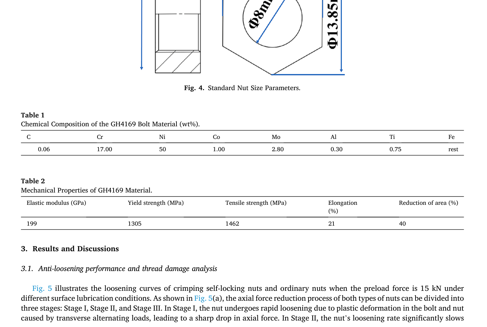

Sun 2025 Crimp — estudo de caso— case study
Figura do artigoPaper figure

Figura(s) originais do artigo (recorte do PDF) — a fonte dos pontos que foram digitalizados.Original figure(s) from the paper (PDF crop) — the source of the digitized points.
Condições do ensaioTest conditions
| ReferênciaReference | Sun et al. (2025). Eng. Fail. Anal. 169:109235 · doi:10.1016/j.engfailanal.2024.109235 |
| ParafusoBolt | M8x1.25 |
| Pré-carga F0Preload F0 | 15 kN |
| AmplitudeAmplitude | ±0.30 mm |
| FrequênciaFrequency | 12.5 Hz |
| Família / nº de curvasFamily / curves | axial, transverse · 8 |
| MAE medianomedian | 0.020 |
Informações do artigo — aparato, corpo-de-prova, matriz de ensaiosPaper information — apparatus, specimen, test matrix
Sun et al. 2025 (Eng. Fail. Anal.) — Anti-loosening and fatigue performance of bolted joints with crimping self-locking nuts
Citation + DOI
Jianfei Sun, Xueming Xiang, Hechang Li, Tao He, He Wang, Yanwei Xu, Jianhua Liu, Minhao Zhu, "Anti-Loosening and fatigue performance of bolted joints with crimping Self-Locking nuts," *Engineering Failure Analysis* 169 (2025) 109235. DOI: 10.1016/j.engfailanal.2024.109235. Received 7 Nov 2024; accepted 22 Dec 2024. Southwest Jiaotong University (SWJTU) Key Lab of Advanced Technologies of Materials + Sichuan State-owned Assets Investment & Management Co. + Aerospace Precision Products Co. — same SWJTU group and same "crimping self-locking nut" device family as the in-library sun2025efa110030 (Influence of repeated assembly ...); J. Sun, H. Wang, Y. Xu, J. Liu are shared co-authors, and the transverse-vibration protocol (15 kN preload, 12.5 Hz, load ratio −1, displacement-controlled) is essentially identical between the two papers. This paper's nut/bolt material is GH4169 (Ni-Fe-Cr-Nb superalloy, the Chinese-designation equivalent of Inconel 718), not the companion paper's GH738 — a different alloy pairing on what is otherwise the same locking-device concept and (very likely) the same rig lineage. This paper additionally contributes an axial-vibration branch (fatigue-life F-N curves + axial loosening curves) that the companion paper does not have.
Gap tag(s) + why
- **G7 (primary) — locking-device contrast: crimping self-locking nut vs.
standard nut. This is the paper's central comparison, run in BOTH loading directions: Fig. 5 (transverse, no-grease/with-grease) and Fig. 14 (axial, two force amplitudes) each plot the crimping self-locking nut side-by-side against an ordinary/standard nut under otherwise-identical conditions. This is a second, independent G7 source for the same crimping-nut device class already flagged in sun2025efa110030.md, but here the contrast is expressed as direct preload-vs-cycle retention curves** (this paper's core deliverable) rather than torque/friction-vs-reassembly trends (the companion paper's focus) — the two are complementary, not redundant.
- Partial G1 — axial branch. Fig. 14 gives axial-vibration loosening
curves (bolt preload vs. cycle) at two force amplitudes (7.5 and 17.5 kN), for both nut types — a genuine axial preload-decay dataset. Marked "partial" because the amplitude sweep is only 2 levels, deliberately chosen as the min/max of a wider F-N test matrix (see below) specifically to bracket the anti-loosening comparison, not a systematic multi-level amplitude sweep in the style of Liu2017 (9 curves) or Li2022 (4 curves × freq). Fig. 13 (F-N/S-N fatigue-life curves) is explicitly excluded from the axial-branch curve set per task instructions — it is life (cycles to fracture) vs. load amplitude, not a preload-decay trace, and is noted only qualitatively below.
- Hint mismatch, flagged explicitly: the task brief for this paper
suggested "three bolt sizes M8/M10/M12 (hexagon head)". This paper tests only one bolt/nut size — there is no M8/M10/M12 sweep anywhere in the text, figures, or tables. The size hint likely belongs to a different paper in this literature round; the actual thread size here is inferred as M8 from the standard nut's Φ8 mm thread bore in Fig. 4 (not explicitly labeled "M8" anywhere in the text — see Specimen/materials).
Rig / apparatus
- Two separate vibration test fixtures (Fig. 1): (a) axial vibration test
fixture, (b) transverse vibration test fixture. No further rig make/model, load-cell, or preload-measurement method is named in the Methods text (no strain-gauge/ultrasonic/load-washer method stated) — preload measurement method is not described, same gap as the companion paper.
- Transverse vibration — control mode: stated as displacement-controlled
(Junker-type). Section 2.2 "Test Parameters" gives: "Displacement amplitude value load path: A_d = A_F·sin(2πft)" with "Amplitude of cyclic transverse displacement: 0.30 mm" listed as the parameter immediately above — read as imposed transverse displacement amplitude 0.30 mm, frequency 12.5 Hz, load ratio −1 (fully reversed). Maps directly to BAS V2's step_cycle(..., delta_amp=0.30e-3) disp-mode.
- Internal inconsistency, flagged: Section 2.1 (running text) instead
states "the amplitude of cyclic transverse displacement is 0.50 mm" — a different value from Section 2.2's explicit "0.30 mm". We used 0.30 mm (the dedicated "Test Parameters" listing, more likely to be the intended authoritative value) for the V2-mapping note below, but this is a genuine, unresolved contradiction in the source text — not adjudicated by digitizing the curves themselves (curve digitization uses cycle count on the x-axis, unaffected by which displacement value is correct).
- Axial vibration — control mode: force-controlled (despite the
parameter list also being headed "Displacement amplitude value load path" — almost certainly a copy-paste label carried over from the transverse block in the original paper, since the parameter itself is named "Amplitude of cyclic external load" and the stated load ratio is 0, i.e. the load oscillates between 0 and 2×A_F around a mean of A_F — a load-controlled zero-to-max axial fatigue path, F(t) = A_F·sin(2πft) + A_F). Maps to BAS V2 force-controlled mode (step_cycle(F_amp, ...), no delta_amp).
- Test-matrix inconsistency, flagged: Section 2.2 lists "Amplitude of
cyclic external load: 15/16.5/17/17.5 kN", but Section 2.1 states the range is "7.5 to 17.5 kN", and Fig. 13's own text says both nuts run out (>10⁶ cycles) at loads "12.5 kN or less" — so the *actual* F-N test matrix evidently spans at least {7.5, 12.5, 15, 16.5, 17, 17.5} kN, wider than Section 2.2's own 4-value list (which omits 7.5 and 12.5, both of which are clearly used elsewhere in the paper). Fig. 14 itself explicitly uses 7.5 and 17.5 kN ("the minimum and maximum loads were selected for loosening curve analysis") — these are the two amplitudes digitized here.
- Installation: tightening torque = 25 N·m (Section 2.1), target bolt
preload = 15 kN for both the transverse and axial test series (stated independently in both bullet lists of Section 2.2).
- Frequency: transverse 12.5 Hz; axial 25 Hz.
- Load ratio: transverse R = −1 (fully reversed); axial R = 0 (zero-to-max).
- Post-test sectioning/microscopy: alcohol ultrasonic cleaning (3× 10 min),
radial wire-EDM sectioning, super-depth 3D optical microscope (RX-100), SEM (JSM-6610LV), EDS, XRD — all damage-mechanism evidence, not curve sources.
Specimen / materials
- Bolt: hexagon head, dimensions per Fig. 2 — head width 15.6 mm, head
length 5 mm, total shank length 55 mm. Manufactured per Q/DY1079-2018 (an enterprise/internal Chinese standard, not a public national standard — exact thread class/tolerance not otherwise given). Bolts are passivated (no plating stated). Thread pitch is not given anywhere in the text.
- Bolt/nut material: GH4169 (Ni-Fe-Cr-Nb superalloy, Chinese-designation
equivalent of Inconel 718). Composition (Table 1, wt%): C 0.06, Cr 17.00, Ni 50, Co 1.00, Mo 2.80, Al 0.30, Ti 0.75, Fe = rest/balance. Mechanical properties (Table 2): E = 199 GPa, yield = 1305 MPa, tensile = 1462 MPa, elongation = 21 %, reduction of area = 40 % — all physically plausible for Inconel 718-class material (unlike the companion paper's GH738 table, which had a flagged implausible E = 780 GPa; no equivalent anomaly here).
- Nut — two types, same base body: both manufactured per Q/DY1080-2018.
- Crimping self-locking nut (Fig. 3): thread bore Φ8 mm (⇒ inferred M8
thread, not stated explicitly), hex across-corners Φ13.85 mm, overall height 8.5 mm split as ~5.5 mm plain-thread + a "locking area" (a crimped/swaged section near the top, Φ9.6 mm annotated at the locking region — precise crimp interference/geometry is not quantified in this paper, unlike the companion paper's explicit r = 0.05/0.10/0.15 mm FEM sweep; here only the qualitative "locking area" concept and its overall envelope dimensions are given).
- Standard/ordinary nut (Fig. 4): same Φ8 mm bore, Φ13.85 mm across
corners, 5.5 mm plain thread height, no locking area — the reference condition.
- Surface finish: both nut types are silver-plated (SEM-measured
silver layer thickness 14.2 µm). No Ra/Rz roughness value is reported for either the bolt or nut thread surfaces (no emb_depth_vdi roughness-class anchor obtainable from this paper).
- Note: the bolt head's across-corners dimension (15.6 mm, Fig. 2) does
not match the nut's across-corners dimension (13.85 mm, Figs. 3-4) — an unusual pairing if a single wrench size were expected across bolt head and nut; reported as printed, not reconciled.
- Lubrication (transverse test only): two conditions swept — **"without
grease" (Fig. 5a) and "with grease" (Fig. 5b); grease type/brand not specified. A friction-coefficient contrast (μ = 0.14 vs. μ = 0.10) is mentioned in the XRD discussion (Section 3.1, re: Fig. 12b), but the paper's own sentence maps μ = 0.14 to the "low friction / grease-protected" condition — i.e., the numerically higher μ value is described as the lower -friction, greased case. This reads as internally contradictory (higher μ should mean higher, not lower, friction) and is not resolved here** — flagged verbatim as a caveat; it does not affect the Fig. 5(a)/(b) curve digitization, which is keyed to the unambiguous figure captions ("without grease"/"with grease"), not to the μ values.
- Axial test: no lubrication condition stated (single condition, not swept).
- Clamped members / grip stack: not characterized (no thickness, material,
or stack-up given for whatever the bolted joint clamps in either fixture).
Test matrix
| Variable | Levels |
|---|---|
| Nut type | Crimping self-locking ("self-locking nut") vs. standard ("ordinary nut") |
| Transverse: bolt preload | 15 kN (fixed) |
| Transverse: displacement amplitude | 0.30 mm (Section 2.2) — conflicts with 0.50 mm in Section 2.1, see caveat |
| Transverse: frequency | 12.5 Hz |
| Transverse: load ratio | −1 |
| Transverse: lubrication | without grease (Fig. 5a) / with grease (Fig. 5b) |
| Axial: bolt preload | 15 kN (fixed) |
| Axial: force amplitude (F-N curve, Fig. 13) | at least {7.5, 12.5, 15, 16.5, 17, 17.5} kN (matrix not fully itemized in-text) |
| Axial: force amplitude (loosening curves, Fig. 14) | 7.5 kN (a) and 17.5 kN (b), the min/max of the sweep |
| Axial: frequency | 25 Hz |
| Axial: load ratio | 0 (zero-to-max) |
| Curves digitized | 8 total: 2 (nut type) × 2 (Fig. 5 lubrication) + 2 (nut type) × 2 (Fig. 14 amplitude) |
Experimental nuances
- Fig. 5 (transverse) "3-stage" loosening shape: both nuts under "without
grease" (Fig. 5a) show a 3-stage curve — Stage I (rapid loosening from bolt/ nut plastic deformation), Stage II (slow loosening, ratcheting/fretting-wear dominated), Stage III (renewed rapid decline as the bolt sustains shear fatigue cracking, ending in fracture — axial force → 0). Under "with grease" (Fig. 5b) the standard nut shows only a single rapid descent (no distinguishable Stage II/III — plotted curve simply ends, without an explicit fracture note in the text for this panel), while the **crimping nut shows Stage I + a Stage II *constant* plateau** at "approximately 2.8 kN residual axial force," continuing essentially flat out to the 2×10³-cycle plot limit.
- Digitized plateau vs. text's rounded "~2.8 kN": the pixel-measured
self-locking plateau in Fig. 5(b) actually passes through ≈2.8 kN around cycle 300-340, then continues slowly settling to ≈2.1-2.2 kN by cycle 2000 — consistent with the text's "approximately" qualifier (an early/rounded read of the plateau) rather than a discrepancy; see Digitization caveats.
- **Standard-nut curve in Fig. 5(b) is not drawn out to the panel's full 2×10³
-cycle axis** — the plotted blue line stops at cycle ≈664 with F ≈ 0.42 kN and is not extended further (no fracture language for this specific curve in the text; most likely the specimen fully backed off / lost essentially all retained preload and the authors simply stopped plotting, in contrast to the crimping nut's stable low-but-nonzero residual). Digitized curve ends there; do not read this as the true test duration for that specimen.
- Both Fig. 5(a) curves terminate at fracture (axial force plunges to
exactly 0): crimping self-locking nut at ≈15,050-15,100 cycles, standard nut at ≈8,050-8,070 cycles (pixel-read; the text does not give exact fracture cycle counts for this panel, only the qualitative 3-stage description).
- Fig. 14 fracture cycle counts are stated exactly in the text and were
used to anchor/validate the digitized curve endpoints: crimping self-locking nut fractures at 40,999 cycles (F = 17.5 kN case), standard nut at 24,722 cycles — both pixel-traced fracture points landed within ≈0.5 % of these exact values (cross-check, not a coincidence of rounding), which gives good confidence in the Fig. 14(b) pixel→data calibration.
- Fig. 14 "loosening degree" annotations (e.g. "1.5 %", "20.6 %", "9 %",
"15 %", "17 %", "23 %") are a separate derived metric (not directly digitized) — cross-checked against the digitized F-curves and found broadly consistent (e.g. 9 % loosening ⇒ F = 15×0.91 = 13.65 kN, matching the pixel-read post-initial-drop value in Fig. 14b almost exactly; 15 % ⇒ 12.75 kN, matching the pixel value immediately before the final fracture plunge). The 1.5 %/20.6 % pair in Fig. 14(a) is evidently computed against each curve's own *actual* initial reading (which the plot shows is slightly above the nominal 15 kN target for the crimping nut, ≈15.3-15.4 kN) rather than strictly against the 15 kN nominal target — F/F0 in the CSVs here still uses the nominal F0 = 15 kN per the task's literal instruction, so the crimping-nut ratios in ..._axial_F7.5kN_crimp.csv run slightly above 1.0 (up to ≈1.024) — see Digitization caveats, this is not an error.
- F-N (Fig. 13) qualitative result, not digitized: both nut types show
runout (>10⁶ cycles) at ≤12.5 kN; in the finite-life region both are approximately log-linear, with the crimping self-locking nut's S-N slope steeper than the standard nut's — the paper's own reading is that this gives crimping nuts a lifespan advantage specifically under high load, not necessarily at low load.
Main conclusions (paper's own, condensed)
1. Under transverse alternating loads, the crimping self-locking nut's locking area prolongs Stage I and Stage II, so axial force is still relatively high when Stage III (fatigue cracking) begins — net effect: improved anti -loosening and fatigue life vs. the standard nut. Mechanistically: the standard nut's wear debris promotes rotational loosening, while the locking-area clamping force F_b resists nut rotation, keeping axial force high until the bolt itself cracks (paper's own force-balance argument, Eqs. 1-4: at equilibrium F'_A cosβ + F sinβ = μ_s(F cosβ + F_b), i.e. the locking force F_b lets the joint reach a nonzero-force dynamic equilibrium instead of loosening to zero). 2. Transverse wear mechanisms: crimping nut's non-locking area shows fatigue + oxidative wear (worse without grease; grease markedly reduces damage); locking area shows fatigue + adhesive + abrasive wear, largely independent of grease (the locking-area interference fit expels grease quickly, per the paper's own explanation). 3. Under axial alternating loads, the locking area again extends service life (~2× the standard nut) and roughly halves the degree of loosening — same qualitative advantage as the transverse case, now confirmed in the other loading direction. 4. Axial non-locking-area wear: mainly abrasive + fatigue; locking-area wear: abrasive + fatigue + adhesive (crimped section behaves like an interference fit under load). 5. F-N behavior: both nut types exceed 10⁶ cycles (runout) at ≤12.5 kN; in the finite-life region the crimping nut's log-linear S-N slope is steeper, giving it a lifespan edge specifically at higher loads.
Curve inventory
| Figure | Curve / condition | CSV filename | x-axis | F0 | # pts |
|---|---|---|---|---|---|
| Fig. 5(a) | Transverse, without grease, crimping self-locking nut (3-stage, fractures ≈15,066 cyc) | sun2025efa109235_transverse_nogrease_crimp.csv | cycle # | 15 kN | 24 |
| Fig. 5(a) | Transverse, without grease, standard nut (fractures ≈8,065 cyc) | sun2025efa109235_transverse_nogrease_standard.csv | cycle # | 15 kN | 22 |
| Fig. 5(b) | Transverse, with grease, crimping self-locking nut (plateau ≈2.1-2.8 kN out to 2000 cyc) | sun2025efa109235_transverse_grease_crimp.csv | cycle # | 15 kN | 37 |
| Fig. 5(b) | Transverse, with grease, standard nut (curve ends ≈664 cyc, not plotted further) | sun2025efa109235_transverse_grease_standard.csv | cycle # | 15 kN | 37 |
| Fig. 14(a) | Axial, F = 7.5 kN, self-locking nut (near-flat, ends at test limit 1×10⁶ cyc, no fracture) | sun2025efa109235_axial_F7.5kN_crimp.csv | cycle # | 15 kN | 28 |
| Fig. 14(a) | Axial, F = 7.5 kN, standard nut (declining, ends at test limit 1×10⁶ cyc, no fracture) | sun2025efa109235_axial_F7.5kN_standard.csv | cycle # | 15 kN | 29 |
| Fig. 14(b) | Axial, F = 17.5 kN, self-locking nut (fractures at 40,999 cyc, text-exact) | sun2025efa109235_axial_F17.5kN_crimp.csv | cycle # | 15 kN | 26 |
| Fig. 14(b) | Axial, F = 17.5 kN, standard nut (fractures at 24,722 cyc, text-exact) | sun2025efa109235_axial_F17.5kN_standard.csv | cycle # | 15 kN | 25 |
Not digitized (per task instructions): Fig. 13 (F-N/S-N fatigue-life curve — cycles-to-fracture vs. load amplitude, not a preload-decay trace); Figs. 1-4 (fixture photo + bolt/nut dimension drawings, used only for the Specimen/materials section above); Figs. 6-12, 15-18 (force-balance schematic, OM/SEM/EDS/XRD damage micrographs — qualitative damage-mechanism evidence, no x-y curve data).
V2 mapping
locking_device_type/ anti-loosening mechanism: this is a second,
independent G7 confirmation (alongside sun2025efa110030) of the crimping self-locking nut concept, here directly as F/F0-vs-cycle retention curves in both transverse and axial loading. The paper's own force-balance argument (locking force F_b gives a nonzero dynamic-equilibrium floor instead of loosening to zero) is a clean independent physical mechanism for the loose_arrest_floor capability already in the codebase (roadmap #10 / member-stiffness-form-gap memory entry) — the Fig. 5(b) crimping-nut plateau (≈2.1-2.8 kN, non-decaying) and the Fig. 14 near-flat self-locking-nut curves are good qualitative/quantitative targets for that capability's floor level, contrasted against the standard nut's much lower or zero floor under the same nominal conditions.
- Force vs. delta control mode, same specimen family: this paper cleanly
supplies both V2 loading modes from sibling tests — transverse (displacement-controlled, delta_amp=0.30e-3, disp-mode per step_cycle(..., delta_amp=...)) and axial (force-controlled, F_amp levels 7.5/17.5 kN, force-mode per step_cycle(F_amp, ...)) — useful as a paired forward-prediction/transfer check across control modes for the same device family, analogous to how Liu2017/Li2022 axial-force-mode cases are already used (CLAUDE.md: "casos Liu2017 axial *, Li2022 axial *...são força/modal").
- Friction (
mu_initial/friction_bolt): μ = 0.10/0.14 grease-vs-dry
contrast is available but its mapping to which condition is which is ambiguous per the paper's own (apparently self-contradictory) sentence — see Experimental nuances. Not recommended as a clean mu_initial anchor without independent confirmation; the qualitative direction (grease lowers thread damage) is solid, the specific μ pairing is not.
- No
C_creep-relevant data (no static-hold/creep test), **noemb_depth
roughness-class anchor (no Ra/Rz reported), no explicit crimp-interference geometry** (contrast with the companion paper's r = 0.05-0.15 mm FEM sweep — here the locking area is qualitative only).
- Two amplitude levels (7.5/17.5 kN) at fixed F0=15kN, axial, force-mode:
useful as a coarse (2-point) zero-refit prediction check in the style of the Phase-1B axial track (MODEL_LEGITIMACY.md §4.6), though far too sparse on its own to add to the amplitude-sweep falsification evidence already established there (Liu2017/Li2022 remain the dense axial-amplitude sources).
Digitization caveats
- Pixel-level digitization method: all 8 curves were extracted by
rendering each panel at 400 dpi, calibrating the pixel↔data mapping from the plot's own axis border and tick-mark pixel positions (verified against tick spacing, not assumed), then isolating each curve's colour (red = self -locking/crimping nut, blue = standard nut) via HSV-like RGB thresholding + connected-component analysis, followed by column-wise nearest-neighbour continuity tracing to reject annotation artefacts (dashed stage-boundary indicator lines, arrow leaders, "Stage I/II/III" and "×%" text labels, and a zoomed inset in Fig. 5b) that share the curve's colour. Final point lists were downsampled (denser at transitions, sparser on plateaus) to 22-37 points per curve.
- Curve-line colour is NOT uniformly saturated across figures: Fig. 5(a)
and Fig. 14(a)/(b) render in a fairly saturated red/blue (RGB channel separation > 60-80), but Fig. 5(b)'s curve lines render as a much lighter, desaturated pink/light-blue (e.g. RGB (253,154,149) for the "red" curve) — a rendering artefact of very thin near-vertical line segments, not a different curve. Detection thresholds were widened specifically for Fig. 5(b) to compensate; cross-checked by confirming the resulting curve values agree with the paper's own stated ≈2.8 kN plateau and the 15 kN start.
- Fracture "plunge to zero" is compressed to 1-2 CSV points: where a curve
physically fractures (axial force → 0 over essentially 1-3 pixel columns, i.e. tens of cycles), we recorded the last stable pre-fracture reading and a single terminal (cycle, 0.0) point rather than sampling the near-vertical drop itself — consistent with this library's standing convention for fatigue-fracture tails (cf. Yang2021/li2022ti precedent noted in sun2025efa110030.md/CLAUDE.md). For Fig. 14, the terminal cycle count uses the paper's own exact stated fracture cycles (40,999 / 24,722) rather than the pixel-read value, since the text gives these to the integer and our pixel read matched them to within ≈0.5 %.
- **Fig. 5(a) standard-nut and self-locking-nut curves both start below their
own eventual "flat" region in a way suggesting a fast, unresolved initial transient**: the leftmost plotted point (cycle ≈10) already reads 13.95 kN (crimping) / 11.29 kN (standard) — i.e. some initial loosening has already occurred before the first pixel-resolvable point on the 0-20,000-cycle x-axis. This is a real feature of the source plot (confirmed by direct pixel inspection at the y-axis border, not a calibration error) — not smoothed or extrapolated back to F/F0 = 1 at cycle 0.
- Fig. 14(a) self-locking-nut ratios exceed 1.0 (up to ≈1.024): the curve's
own apparent starting value (≈15.3-15.4 kN) is slightly above the nominal F0 = 15 kN test target. Per task instructions, F_over_F0 = raw/F0 uses the stated nominal F0 = 15 kN, so these ratios are left slightly above 1.0 rather than renormalized to the curve's own apparent start — flagged so this is not mistaken for a digitization error.
- Fig. 5(b) standard-nut curve's true plotted endpoint is ≈664 cycles
(F ≈ 0.42 kN); the last 1-2 raw pixel samples showed a ~2 % non-monotonic wiggle (0.42→0.43→0.42 kN) consistent with rendering noise on a very flat, thin line — not treated as a real reversal.
- Reading precision: Fig. 5(a)/(b) plateaus and Fig. 14 near-flat regions
are read to roughly ±0.05-0.1 kN (±0.3-0.7 % of F0); steep transition regions (Stage I drops, fracture onsets) are read to roughly ±0.15-0.3 kN given the steep local slope: a few pixels of column-tracing tolerance maps to a larger kN range there than on the flat plateaus.
- Bolt size (M8) is an inference, not a stated fact — see Gap tags. Thread
pitch, thread class/tolerance, and crimp-interference geometry are not given anywhere in the text.
- Renders used for digitization are archived in
figures/:
sun2025efa109235_p3_full.png (Figs. 2-3, bolt/nut dimensions), sun2025efa109235_p4_full.png (Fig. 4 standard-nut dimensions + Fig. 5 full page), sun2025efa109235_fig5a.png, sun2025efa109235_fig5b.png (tight panel crops used for extraction), sun2025efa109235_p10_full.png (Fig. 14 full page), sun2025efa109235_fig14a.png, sun2025efa109235_fig14b.png (tight panel crops used for extraction).
Caudas nogrease estendidas
..._transverse_nogrease_{standard,crimp}_tozero.csv= pontos originais + cauda do Estágio III re-digitalizada da Fig. 5(a) até F = 0 (a figura MOSTRA ambas as curvas chegando ao eixo; render PyMuPDF 8×, calibração pelos 11+9 ticks, originais intactos — sha256 conferido antes/depois).- A queda final é VERTICAL na resolução da figura (fratura por cisalhamento essencialmente instantânea, não uma taxa resolvida): standard N ≈ 8063, crimp N ≈ 15051 (±1 px ≈ ±14 ciclos); os pontos novos em passos de 0,5 kN compartilham por isso o mesmo N, e as linhas terminais originais (8065/15066, F=0) foram mantidas como pouso (concordância ≤ 1 px com a vertical medida).
- Interferências rejeitadas na leitura (centróide ponderado só de runs estreitos da curva): na vertical azul, a tracejada de fronteira Estágio II/III ~4 px à esquerda (N ≈ 8000) e o leader/seta "Stage II" em ~3,8/~2,1 kN; na vermelha, a tracejada Estágio III termina em ~8,5 kN (sem sobreposição) e um fragmento de tick vermelho contamina só y < 0,35 kN junto ao eixo.
Modelo vs dadoModel vs data
Cada card = uma curva digitalizada deste estudo: a linha é a previsão do modelo (config adotada, do store canônico) e os pontos são o dado medido; o badge traz o MAE.Each card = one digitized curve from this study: the line is the model prediction (adopted config, from the canonical store) and the dots are the measured data; the badge shows the MAE.
ReprodutibilidadeReproducibility
Cada card tem ↓ CSV (modelo + dado da curva). Os CSVs digitalizados originais ficam em Models/CALIBRATION_AND_VALIDATION/curve_library/digitized_csv/; a curva do modelo vem do store canônico (config adotada por fonte). Para reproduzir localmente:Each card has ↓ CSV (curve model + data). The original digitized CSVs live in Models/CALIBRATION_AND_VALIDATION/curve_library/digitized_csv/; the model curve comes from the canonical store (adopted per-source config). To reproduce locally:
Ver também o guia de uso do programa e a metodologia.See also the program usage guide and the methodology.